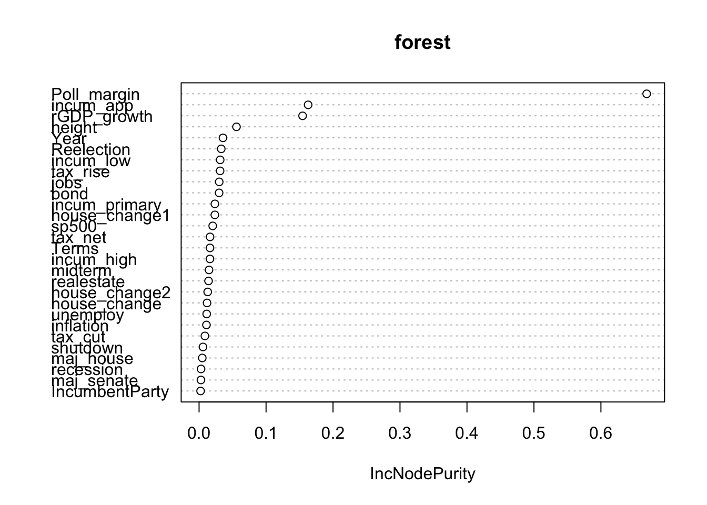

library(tidyverse)
library(randomForest)
setwd("/Users/kevinli/Documents/GitHub/kevinli03.github.io/election/us2024")
data <- read_csv("data.csv")Presidential Prediction
Disclamer: i collected all the data and ran all this models in like 2 hours. I did not put much effort into this, its not very good. Just for fun. Might add ridge lasso later but lazy.
- Very low sample size as well - just 22 presidential elections included as training data.
- Also, this is a very unique presidential election - may be flawed to assume that past data can predict what will happen this time.
3 types of models on here (use table of contents to access or scroll down)
- Electoral College Prediction Models
- Winner/Loser Prediction Models
- My own gut based prediction (with map!)
Electoral Votes Predictions
I create 3 different predictions for the 2024 election for each model.
Most Likely Scenario: polls say harris leads by 1.2% (according to 538 aggregator, seems to be most accurate)
Moderately Likely Scenario: polls say harris leads by 2% (the economist aggregator rounded up)
Unlikely Scenario: If polls say harris leads by 3% (a few polls say this, but unlikely to be true).
2 Best Models (by recent performance)
Random Forest Model (5 Variables Bootstrap Sampled) With Height Excluded:
Most Likely: If harris leads 1.2% in polls: Harris 266.97, Trump 271.03
If harris leads 2% in polls: Harris 269.24, Trump 268.76
If harris leads 3% in polls (unlikely): Harris 297, Trump 241
Past Performance (5 out of last 6 elections correct winner)
| 2020 | 2016 | 2012 | 2008 | 2004 | 2000 | |
|---|---|---|---|---|---|---|
| Model (Incumbent) | 250.5 | 264.2 | 317.4 | 188.6 | 285.1 | 272.9 |
| Correct Winner? | Yes | Yes | Yes | Yes | Yes | No |
| Actual (Incumbent) | 232 | 227 | 332 | 173 | 286 | 266 |
| Incumbent | Trump | Clinton | Obama | McCain | Bush | Gore |
% of Variance Explained in \(Y\) (Electoral Votes Received by Incumbent): 42.15%
Random Forest Model (5 Variables Bootstrap Sampled) with Height Included:
Most Likely: If harris leads 1.2% in polls: Harris 267.88, Trump 270.12
If harris leads 2% in polls: Harris 271.96, Trump 266.04
If harris leads 3% in polls (unlikely): Harris 296.45, Trump 241.5
Past performance (5 out of last 6 elections correct winner)
| 2020 | 2016 | 2012 | 2008 | 2004 | 2000 | |
|---|---|---|---|---|---|---|
| Model (Incumbent) | 253.5 | 267.6 | 313.7 | 191.2 | 272.7 | 276.2 |
| Correct Winner? | Yes | Yes | Yes | Yes | Yes | No |
| Actual (Incumbent) | 232 | 227 | 332 | 173 | 286 | 266 |
| Incumbent | Trump | Clinton | Obama | McCain | Bush | Gore |
% of Variance Explained in \(Y\) (Electoral Votes Received by Incumbent): 37.64%
Other Models
Random Forest (20 Variables Boostrap Sampled) with Height:
If harris leads 1.2% in polls: Harris 229.14 Electoral votes, Trump 308.86
If Harris leads 2% in polls: Harris 232.33 Electoral Votes, Trump 305.67
If Harris leads by 3% in polls (unlikely): Harris 290.29 Electoral Votes, Trump 247.7
Past performance (4 out of last 6 elections correct winner)
| 2020 | 2016 | 2012 | 2008 | 2004 | 2000 | |
|---|---|---|---|---|---|---|
| Model (Incumbent) | 237.6 | 278.9 | 300.2 | 186.5 | 259 | 261.4 |
| Correct Winner? | Yes | No | Yes | Yes | No | Yes |
| Actual (Incumbent) | 232 | 227 | 332 | 173 | 286 | 266 |
| Incumbent | Trump | Clinton | Obama | McCain | Bush | Gore |
% of Variance Explained in \(Y\) (Electoral Votes Recieved by Incumbent): 56.94%
Bagging Model with Height Excluded:
If harris leads 1.2% in polls: 229.66 Harris, 308.34 Trump
If harris leads 2% in polls: 235.41 Harris, 302.59 Trump
If harris leads by 3% in polls (unlikely): 307 Harris, 231 Trump
Past Performance (4 out of last 6 elections correct winner)
| 2020 | 2016 | 2012 | 2008 | 2004 | 2000 | |
|---|---|---|---|---|---|---|
| Model (Incumbent) | 225 | 294.7 | 302.8 | 190.4 | 263.2 | 253.7 |
| Correct Winner? | Yes | No | Yes | Yes | No | Yes |
| Actual (Incumbent) | 232 | 227 | 332 | 173 | 286 | 266 |
| Incumbent | Trump | Clinton | Obama | McCain | Bush | Gore |
% of Variance Explained in \(Y\) (Electoral Votes Received by Incumbent): 54.12%
Random Forest (19 Variables Bootstrap Sampled) With Height Excluded:
If harris leads 1.2% in polls: 227.07 Harris, 310.93 Trump
If harris leads 2% in polls: 229.9 Harris, 308.1 Trump
If harris leads 3% in polls (unlikely): 290.72 Harris, 247.28 Harris
Past Performance (4 out of last 6 elections correct winner)
| 2020 | 2016 | 2012 | 2008 | 2004 | 2000 | |
|---|---|---|---|---|---|---|
| Model (Incumbent) | 227.5 | 281.8 | 306.2 | 184.2 | 264.3 | 258.2 |
| Correct Winner? | Yes | No | Yes | Yes | No | Yes |
| Actual (Incumbent) | 232 | 227 | 332 | 173 | 286 | 266 |
| Incumbent | Trump | Clinton | Obama | McCain | Bush | Gore |
% of Variance Explained in \(Y\) (Electoral Votes Received by Incumbent): 56.42%
Bagging With Height:
If harris leads 1.2% in polls: Harris 215.74, Trump 332.26
If harris leads 2% in polls: Harris 221.1, Trump 316.9
If harris leads 3% in polls (unlikely): Harris 293.18, Trump 244.82
Past Peformance (4 out of last 6 elections correct winner)
| 2020 | 2016 | 2012 | 2008 | 2004 | 2000 | |
|---|---|---|---|---|---|---|
| Model (Incumbent) | 230.7 | 292.4 | 296.2 | 185.2 | 254.4 | 259.4 |
| Correct Winner? | Yes | No | Yes | Yes | No | Yes |
| Actual (Incumbent) | 232 | 227 | 332 | 173 | 286 | 266 |
| Incumbent | Trump | Clinton | Obama | McCain | Bush | Gore |
% of Variance Explained in \(Y\) (Electoral Votes Received by Incumbent): 55.92%
Win/Lose Probability Predictions
Note: Every model in this section correctly predicts the election winners of the last 7 elections.
Aggregate: All believe Trump will win if Harris leads by only 1.2% or 2% in polls.
Naive Bayes Without Height:
Most Likely - If harris leads 1.2% in polls: Trump wins
Moderately Likely - If harris leads 2% in polls: Trump wins
Unlikely - If harris leads 3% in polls: Harris wins
Past performance (6/6 for the last 6 elections)
| 2020 | 2016 | 2012 | 2008 | 2004 | 2000 | |
|---|---|---|---|---|---|---|
| Model (Incumbent Result) | Lost | Lost | Won | Lost | Won | Lost |
| Correct Winner? | Yes | Yes | Yes | Yes | Yes | Yes |
| Actual (Incumbent) | Lost | Lost | Won | Lost | Won | Lost |
| Incumbent | Trump | Clinton | Obama | McCain | Bush | Gore |
Error rate over last 22 elections: NA (too lazy to calculate)
Bagging Model Without Height:
Most Likely - If harris leads 1.2% in polls: Trump Wins
Moderately Likely - If harris leads 2% in polls: Trump wins
Unlikely - If harris leads 3% in polls: Trump wins
Past performance (6/6 for the last 6 elections)
| 2020 | 2016 | 2012 | 2008 | 2004 | 2000 | |
|---|---|---|---|---|---|---|
| Model (Incumbent Result) | Lost | Lost | Won | Lost | Won | Lost |
| Correct Winner? | Yes | Yes | Yes | Yes | Yes | Yes |
| Actual (Incumbent) | Lost | Lost | Won | Lost | Won | Lost |
| Incumbent | Trump | Clinton | Obama | McCain | Bush | Gore |
Error rate over last 22 elections: 22.73%
Random Forest (5 variables bootstrapped) Without Height:
Most Likely - If harris leads 1.2% in polls: Trump Wins
Moderately Likely - If harris leads 2% in polls: Trump wins
Unlikely - If harris leads 3% in polls: Trump wins
Past performance (6/6 for the last 6 elections)
| 2020 | 2016 | 2012 | 2008 | 2004 | 2000 | |
|---|---|---|---|---|---|---|
| Model (Incumbent Result) | Lost | Lost | Won | Lost | Won | Lost |
| Correct Winner? | Yes | Yes | Yes | Yes | Yes | Yes |
| Actual (Incumbent) | Lost | Lost | Won | Lost | Won | Lost |
| Incumbent | Trump | Clinton | Obama | McCain | Bush | Gore |
Error rate over last 22 elections: 27.27%
My Personal (Gut-Based) Predictions
My Personal Map

The Data in My Models
I used the following variables (that I gathered in like one hour). I did not check data quality, could be terrible.
- Year
- Incumbent Party
- Reelection (is on of the candidates the current president)
- Terms current party is in office continuously
- Poll margin (incumbent party candidate- challenger)
- Real GDP Growth in election year
- Unemployment rate in election rate
- Inflation rate in election year
- Incumbent party president average approval rating (gallup)
- Incumbent party president highest approval rating (gallup)
- Incumbent party president lowest approval rating (gallup)
- Recession occurred in the past 4 years?
- House net change in seats (of incumbent party) during the midterm election 2 years before the election
- House net change in seats (of incumbent party) during the election 4 years ago
- House change in seats (of incumbent party) for both midterm and 4 year ago election combined.
- Incumbent party faced a primary challenge? (challenge defined as winner of primary recieved less than 60% of votes. I classify harris is no-primary challenge).
- S&P 500 Returns in election year
- Midterm house elections from 2 years ago, incumbent party’s vote share overall (entire country)
- % Change in Jobs from last election to this election (a full presidential term)
- Height of the candidates (incumbent - challenger)
- Real estate returns in election year
- Treasury 10-year bond returns in election year.
- Does incumbent party have majority in House?
- Does incumbent party have majority in Senate?
- How many workers were furloughed as a result of a government shutdown during the current administration?
- Did any of the 15 largest tax rises in history occur during the current administration? If so, how much was the tax rise (% wise)
- Did any of the 15 largest tax breaks in history occur during the current administration? If so, how much was the tax break (% wise)
- The last two data points but net.
Start with the data analysis.
Load packages, clean data
clean data
dta <- data[-c(1:3),] # get rid of first 3 row
dta <- dta %>%
select(-c(Incumbent, Challenger))Electoral College (R Code)
Models with Height
Bagging:
set.seed(32435)
bagging <- randomForest(Pct_incumb ~ .,
ntree = 501,
nodesize = 1,
data = dta,
na.action = na.omit,
mtry = 28,
importance = TRUE)
bagging
Call:
randomForest(formula = Pct_incumb ~ ., data = dta, ntree = 501, nodesize = 1, mtry = 28, importance = TRUE, na.action = na.omit)
Type of random forest: regression
Number of trees: 501
No. of variables tried at each split: 28
Mean of squared residuals: 0.03047664
% Var explained: 55.92set.seed(32435)
#prediction
data2024 <- data[1:9,]
data2024 <- data2024[,-c(2,3,4)]
set.seed(32435)
bagging_pred <- predict(bagging, newdata = data2024)
bagging_pred * 538 1 2 3 4 5 6 7 8
215.7469 221.1062 293.1835 230.7959 292.4063 296.2063 185.2304 254.4689
9
259.4328 Random Forest (5 variables boostrap Sampled):
set.seed(32435)
forest <- randomForest(Pct_incumb ~ .,
ntree = 501,
nodesize = 1,
data = dta,
na.action = na.omit,
mtry = 5,
importance = TRUE)
forest
Call:
randomForest(formula = Pct_incumb ~ ., data = dta, ntree = 501, nodesize = 1, mtry = 5, importance = TRUE, na.action = na.omit)
Type of random forest: regression
Number of trees: 501
No. of variables tried at each split: 5
Mean of squared residuals: 0.043118
% Var explained: 37.64# predictions
set.seed(32435)
forest_pred <- predict(forest, newdata = data2024)
forest_pred * 538 1 2 3 4 5 6 7 8
267.8893 271.9680 296.4508 253.5039 267.6710 313.7579 191.2754 272.7308
9
276.2091 Random Forest (20 Variables boostrap sampled)
set.seed(32435)
forest <- randomForest(Pct_incumb ~ .,
ntree = 501,
nodesize = 1,
data = dta,
na.action = na.omit,
mtry = 20,
importance = TRUE)
forest
Call:
randomForest(formula = Pct_incumb ~ ., data = dta, ntree = 501, nodesize = 1, mtry = 20, importance = TRUE, na.action = na.omit)
Type of random forest: regression
Number of trees: 501
No. of variables tried at each split: 20
Mean of squared residuals: 0.02977701
% Var explained: 56.94set.seed(32435)
forest_pred <- predict(forest, newdata = data2024)
forest_pred * 538 1 2 3 4 5 6 7 8
229.1486 232.3351 290.2950 237.6001 278.9861 300.2055 186.5987 259.0048
9
261.4613 Importance
varImpPlot(bagging, type = 2)varImpPlot(forest, type = 2)
Models without Height
dta_noheight <- dta %>%
select(-height)
data2024_noheight <- data2024 %>%
select(-height)bagging
set.seed(32435)
bagging1 <- randomForest(Pct_incumb ~ .,
ntree = 501,
nodesize = 1,
data = dta_noheight,
na.action = na.omit,
mtry = 27,
importance = TRUE)
bagging1
Call:
randomForest(formula = Pct_incumb ~ ., data = dta_noheight, ntree = 501, nodesize = 1, mtry = 27, importance = TRUE, na.action = na.omit)
Type of random forest: regression
Number of trees: 501
No. of variables tried at each split: 27
Mean of squared residuals: 0.03172727
% Var explained: 54.12set.seed(32435)
bagging_pred1 <- predict(bagging1, newdata = data2024_noheight)
bagging_pred1 * 538 1 2 3 4 5 6 7 8
229.6651 235.4156 307.0048 225.0212 294.7422 302.8635 190.4628 263.2217
9
253.7652 Random forst (19 variables boostrap sampled)
set.seed(32435)
forest1 <- randomForest(Pct_incumb ~ .,
ntree = 501,
nodesize = 1,
data = dta_noheight,
na.action = na.omit,
mtry = 19,
importance = TRUE)
forest1
Call:
randomForest(formula = Pct_incumb ~ ., data = dta_noheight, ntree = 501, nodesize = 1, mtry = 19, importance = TRUE, na.action = na.omit)
Type of random forest: regression
Number of trees: 501
No. of variables tried at each split: 19
Mean of squared residuals: 0.03013152
% Var explained: 56.42set.seed(32435)
forest_pred1 <- predict(forest1, newdata = data2024_noheight)
forest_pred1 * 538 1 2 3 4 5 6 7 8
227.0768 229.9066 290.7208 227.5034 281.8953 306.2310 184.2865 264.3723
9
258.2720 random forest (5 variables boostrap sampled):
set.seed(32435)
forest1 <- randomForest(Pct_incumb ~ .,
ntree = 501,
nodesize = 1,
data = dta_noheight,
na.action = na.omit,
mtry = 5,
importance = TRUE)
forest1
Call:
randomForest(formula = Pct_incumb ~ ., data = dta_noheight, ntree = 501, nodesize = 1, mtry = 5, importance = TRUE, na.action = na.omit)
Type of random forest: regression
Number of trees: 501
No. of variables tried at each split: 5
Mean of squared residuals: 0.04000085
% Var explained: 42.15set.seed(32435)
forest_pred1 <- predict(forest1, newdata = data2024_noheight)
forest_pred1 * 538 1 2 3 4 5 6 7 8
266.9741 269.2456 297.0022 250.5545 264.2572 317.4231 188.6188 285.1010
9
272.9281 Win/Lose (R Code)
With Height
clean data
win <- read_csv("win.csv")
win2024 <- win[1:9,]
win2024 <- win2024[,-2]
win <- win[-c(1:3),] # get rid of first 3 row
win$win <- as.factor(win$win)bagging
set.seed(32435)
bagging_win <- randomForest(win ~ .,
ntree = 501,
nodesize = 1,
data = win,
na.action = na.omit,
mtry = 28,
importance = TRUE)
bagging_win
Call:
randomForest(formula = win ~ ., data = win, ntree = 501, nodesize = 1, mtry = 28, importance = TRUE, na.action = na.omit)
Type of random forest: classification
Number of trees: 501
No. of variables tried at each split: 28
OOB estimate of error rate: 27.27%
Confusion matrix:
0 1 class.error
0 8 2 0.2000000
1 4 8 0.3333333#prediction
set.seed(32435)
bagging_winpred <- predict(bagging_win, newdata = win2024, type = "prob")
bagging_winpred 0 1
1 0.6866267 0.31337325
2 0.6846307 0.31536926
3 0.6227545 0.37724551
4 0.8642715 0.13572854
5 0.7844311 0.21556886
6 0.1836327 0.81636727
7 0.9900200 0.00998004
8 0.1876248 0.81237525
9 0.8722555 0.12774451
attr(,"class")
[1] "matrix" "array" "votes" Random Forest (5 vairables boostrap sampled):
bagging_win <- randomForest(win ~ .,
ntree = 501,
nodesize = 1,
data = win,
na.action = na.omit,
mtry = 5,
importance = TRUE)
bagging_win
Call:
randomForest(formula = win ~ ., data = win, ntree = 501, nodesize = 1, mtry = 5, importance = TRUE, na.action = na.omit)
Type of random forest: classification
Number of trees: 501
No. of variables tried at each split: 5
OOB estimate of error rate: 31.82%
Confusion matrix:
0 1 class.error
0 8 2 0.2000000
1 5 7 0.4166667set.seed(32435)
bagging_winpred <- predict(bagging_win, newdata = win2024, type = "prob")
bagging_winpred 0 1
1 0.5888224 0.41117764
2 0.5868263 0.41317365
3 0.5489022 0.45109780
4 0.8423154 0.15768463
5 0.8003992 0.19960080
6 0.1956088 0.80439122
7 0.9600798 0.03992016
8 0.2195609 0.78043912
9 0.8323353 0.16766467
attr(,"class")
[1] "matrix" "array" "votes" naive bayes
library(e1071)bayes <- naiveBayes(win ~ ., data = win)
set.seed(32435)
bayes_winpred <- predict(bayes, newdata = win2024, type = "raw")
bayes_winpred 0 1
[1,] 0.9995677419 4.322581e-04
[2,] 0.9994574316 5.425684e-04
[3,] 0.9992597549 7.402451e-04
[4,] 0.9999948160 5.184010e-06
[5,] 0.9999765940 2.340603e-05
[6,] 0.0001471148 9.998529e-01
[7,] 1.0000000000 1.548431e-13
[8,] 0.1160488759 8.839511e-01
[9,] 0.9941196876 5.880312e-03Without Height
win_noheight <- win %>%
select(-height)
win2024_noheight <- win2024 %>%
select(-height)Bagging:
set.seed(32435)
bagging_win1 <- randomForest(win ~ .,
ntree = 501,
nodesize = 1,
data = win_noheight,
na.action = na.omit,
mtry = 27,
importance = TRUE)
bagging_win1
Call:
randomForest(formula = win ~ ., data = win_noheight, ntree = 501, nodesize = 1, mtry = 27, importance = TRUE, na.action = na.omit)
Type of random forest: classification
Number of trees: 501
No. of variables tried at each split: 27
OOB estimate of error rate: 22.73%
Confusion matrix:
0 1 class.error
0 8 2 0.20
1 3 9 0.25set.seed(32435)
bagging_winpred1 <- predict(bagging_win1, newdata = win2024_noheight, type = "prob")
bagging_winpred1 0 1
1 0.6506986 0.34930140
2 0.6487026 0.35129741
3 0.5748503 0.42514970
4 0.8722555 0.12774451
5 0.7684631 0.23153693
6 0.1756487 0.82435130
7 0.9680639 0.03193613
8 0.2055888 0.79441118
9 0.8403194 0.15968064
attr(,"class")
[1] "matrix" "array" "votes" Random Forest (5 Variables bootstrapped):
set.seed(32435)
bagging_win1 <- randomForest(win ~ .,
ntree = 501,
nodesize = 1,
data = win_noheight,
na.action = na.omit,
mtry = 5,
importance = TRUE)
bagging_win1
Call:
randomForest(formula = win ~ ., data = win_noheight, ntree = 501, nodesize = 1, mtry = 5, importance = TRUE, na.action = na.omit)
Type of random forest: classification
Number of trees: 501
No. of variables tried at each split: 5
OOB estimate of error rate: 27.27%
Confusion matrix:
0 1 class.error
0 6 4 0.4000000
1 2 10 0.1666667set.seed(32435)
bagging_winpred1 <- predict(bagging_win1, newdata = win2024_noheight, type = "prob")
bagging_winpred1 0 1
1 0.5489022 0.45109780
2 0.5489022 0.45109780
3 0.5329341 0.46706587
4 0.8243513 0.17564870
5 0.8283433 0.17165669
6 0.1377246 0.86227545
7 0.9640719 0.03592814
8 0.1696607 0.83033932
9 0.8103792 0.18962076
attr(,"class")
[1] "matrix" "array" "votes" Naive Bayes:
set.seed(32435)
bayes1 <- naiveBayes(win ~ ., data = win_noheight)
bayes_winpred1 <- predict(bayes1, newdata = win2024_noheight, type = "raw")
set.seed(32435)
bayes_winpred1 0 1
[1,] 0.9397623361 6.023766e-02
[2,] 0.9255270741 7.447293e-02
[3,] 0.9010603924 9.893961e-02
[4,] 0.9999976463 2.353692e-06
[5,] 0.9976060912 2.393909e-03
[6,] 0.0001890752 9.998109e-01
[7,] 1.0000000000 6.021154e-13
[8,] 0.0326591074 9.673409e-01
[9,] 0.9966782550 3.321745e-03